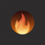

Un instal·lador que configura Jellyfin, Radarr, Sonarr, qBittorrent i més en el teu ordinador en menys de 5 minuts. Sense comandos, sense complicacions.
Windows 10 / 11 · x64 · Requereix Docker Desktop (gratuït)
Tot inclòs
Per què Caliu?
Com funciona
L'instal·lador et guia pas a pas. No cal tenir cap coneixement tècnic — si pots instal·lar un programa normal, pots instal·lar Caliu.
Un únic fitxer .exe. Doble clic i l'assistent s'obre. Crea drecera a l'Escriptori i a l'Inici automàticament.
Si no el tens, Caliu t'hi redirigeix directament. Docker és el motor que executa tots els serveis. És gratuït i oficial de Microsoft.
Selecciona una carpeta al teu disc dur o disc extern. Necessites almenys 100 GB lliures. Caliu no toca res que ja hi hagi.
Caliu arrenca tot el stack automàticament. Obre Jellyfin, afegeix indexadors a Prowlarr i comença a descarregar.
Privacitat recomanada
Una VPN amaga les teves descàrregues del teu proveïdor d'internet. Caliu la integra en un sol pas, sense configuració extra.
ProtonVPN funciona perfectament amb Gluetun (el motor VPN de Caliu) via WireGuard. Té pla gratuït i plans de pagament des de 4€/mes. Creat per la mateixa empresa que ProtonMail, amb seu a Suïssa i política de zero registres.
⚠️ L'ús de Caliu i de les descàrregues és responsabilitat exclusiva de l'usuari. Compleix la legislació vigent al teu país.
Preguntes freqüents
Descarrega Caliu i tingues el teu Netflix casolà en 5 minuts.
Windows 10 / 11 · macOS 12+ · x64 · v1.0.6 · Docker Desktop necessari (gratuït)
Si Caliu t'ha estat útil, pots donar suport al projecte amb un cafè.